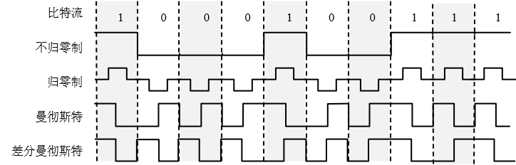
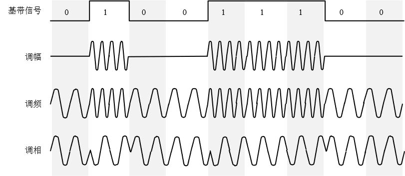
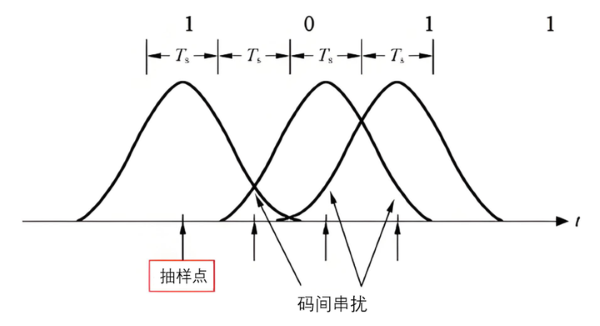

物理层
@Physical Layer- 任务 Mission
- 提供物理媒质
- 传输比特流
- 利用物理介质为网络节点建立、管理和释放链接
- 为数据链路层提供数据传输服务；将数据链路层帧中的每个比特传输到对端
- 协议 Protocol
- 机械特性
连接线/器的形状、尺寸、引脚数和排列等
- 电气特性
接口电缆的各条线上电压的范围：什么电平代表1，什么电平代表0
- 功能特性
接口电缆的各条线上电压表示的意义
- 规程特性
规定接口上各种信号线以及各种电平出现的先后顺序，即哪根信号线先动作，哪根信号线后动作
通信模式 Mode
- 单工 Simplex
- 单方向通信
- 半双工 Half-Duplex
- 双向通信
- 但不能同时通信
- 全双工 Full-Duplex
- 双向通信
- 可同时通信


信号 Signal
- 基带信号
- 仅仅包含基本频率信号
- 属于低频，甚至有直流分量；如：音频信号 0.3-3Khz
- 功率小；不利于传播
- 解决途径：调制 Modulation
基带调制：俗称编码 Coding
频带调制：频谱搬移；借助载波 Carrier，从低频搬移至高频
- 频带信号
- 经过频带调制的信号
- 属于高频部分
编码 Coding
- 不归零码 NRZ,Non-Return to Zero
- 核心原理：电平在整个位元时间内保持恒定（不归零）
- NRZ-L：电平高低直接表示“1”或“0”（如高电平=1，低电平=0）
- NRZ-I：电平跳变表示“1”，不变表示“0”（差分编码）
- 波形特点：
位中间电平不归零，连续多个相同比特时，电平线保持平直
如:连发几个“1”，信号就一直拉高。接收端很难判断这一个比特到底“走了多长”，容易发生错位（漂移）
- 优点：占用频带窄，利用率高，实现简单
- 缺点：
缺乏同步时钟信息（连续长“0”或长“1”时，接收端无法判断位边界）
存在直流分量（信号平均电平不为0）
- 典型应用：RS-232串口、磁盘磁记录
- 归零码 RZ, Return to Zero
- 核心原理：每个码元中间，电平都会回归到零电平（正电平代表1，负电平代表0，位中间回零）
- 波形特点：每个比特周期内，信号都会跳变一次（由高/低→零）
- 优点：每个码元都包含同步信息（归零动作），利于接收端提取位时钟
- 缺点：
占用带宽是NRZ的两倍（因为码元内多了一次跳变）
仍存在直流分量问题（虽然比NRZ有所改善）
- 典型应用：早期数字传输系统，目前已较少单独使用（常作为其他编码的基础）
- 曼切斯特码 Manchester Encoding
- 位中间跳变兼具数据表示和同步功能
- 标准IEEE 802.3（以太网）：高→低跳变表示“1”，低→高跳变表示“0”
- 反之亦可（不同标准定义可能相反）
- 波形特点：每个比特位中间必然有一次跳变，跳变方向决定数据值
- 优点：
无直流分量（每个位内正负时间相等）
同步性能极佳（跳变即为时钟）
易于检测错误（若无中间跳变则为非法信号）
- 缺点：带宽需求是NRZ的2倍，编码效率仅为50%
- 典型应用：经典以太网（10BASE-T）、RFID、航空数据总线
- 差分曼切斯特码 Differential Manchester Encoding
- 位中间跳变仅用于同步，数据值由位起始边沿是否跳变决定
- 位起始处有跳变 → 表示“0”
- 位起始处无跳变 → 表示“1”
- 波形特点：每位中间必定跳变，但起始边沿可有可无
- 优点：
兼具无直流、强同步特性
抗噪性优于曼彻斯特码（因为逻辑判断仅依赖跳变有无，而非跳变方向，极性反转不影响解码）
- 缺点：带宽需求同样为NRZ的2倍，实现复杂度略高于曼彻斯特
- 典型应用：令牌环网 (Token Ring)、IEEE 802.5标准

调制 Modulation
- 调幅 AM
- 原理：改变载波的振幅（高低）来携带信息。载波的频率和相位保持不变
- 数字信号（ASK）：例如，振幅高代表“1”，振幅低（或为0）代表“0”
- 优点：实现简单，设备成本低，占用频带窄
- 缺点：抗干扰能力极差。因为自然界中许多干扰（如闪电、电机火花、信号衰减）都会直接改变信号的振幅。接收端很容易把干扰误认为是信号变化
- 常见应用：中波广播（AM收音机）、早期的低速无线传输
- 调频 FM
- 原理：改变载波的频率（波形疏密）来携带信息。载波的振幅保持不变（保持不变是它抗干扰的关键）
- 数字信号（FSK）：例如，频率高代表“1”，频率低代表“0”
- 优点：抗干扰能力强。因为干扰通常改变的是振幅，接收端通过“限幅”把振幅削平，只关注频率的变化，就能准确还原信号。音质比AM好
- 缺点：需要比AM更宽的带宽
- 常见应用：调频广播（FM收音机）、蓝牙（经典蓝牙的部分阶段）、老式拨号调制解调器
- 调相 PM
- 原理：改变载波的相位（波形的起始或偏移位置）来携带信息。振幅和频率保持不变
- 数字信号（PSK）：例如，波形保持原样代表“0”，波形反转180度代表“1”
- 优点：抗干扰能力强。更关键的是，PSK很容易与其他调制结合
- 缺点：接收端需要一个非常精准的“参考相位”来对比是0度还是180度，否则容易解调错误
- 常见应用：卫星通信、Wi-Fi（早期802.11b的DSSS部分）
- 正交振幅调制 QAM
- 原理：这是幅度和相位的结合。它同时改变载波的振幅和相位来传递信息
- 为什么叫“正交”：因为它在数学上利用了相差90度的两个载波（正弦波和余弦波）来同时传输两路信号，互不干扰
- 核心优势：效率极高。QAM像是一个“二维坐标系”，它把每个“点”都对应一个二进制数
- 16-QAM：有16个点，每个点代表4个比特（2^4=16）
- 64-QAM：有64个点，每个点代表6个比特
- 256-QAM：有256个点，每个点代表8个比特
- 优点：在有限的带宽下，能传输极高的数据量（频谱效率极高）
- 缺点：对噪声极其敏感。因为点靠得太近了，一点微弱的噪声/振幅变化，就可能导致接收端把“A点”误判为旁边的“B点”
- 常见应用：4G/5G蜂窝网络、Wi-Fi（802.11ac/ax）、有线电视电缆调制解调器（DOCSIS）、数字电视广播
- 你常听到的“星座图”就是这些点在坐标系的分布图，点越密集，传输速率越快

信道容量 Capcity
- 符号 Symbol
- 也叫码元
- 承载比特的物理载体
- 一个特定波形/电平状态
- 一个码元可以携带1个或多个比特
如果是 2个电平（比如0V和5V），一个码元携带 1 个比特（高=1，低=0）
如果是 4个电平（比如0V, 1V, 2V, 3V），一个码元携带 2 个比特（00, 01, 10, 11）
- 码间串扰 ISI，Inter-symbol Interference
- 由于信道中噪声的影响，造成前一码元的拖尾过长与后一码元发生混叠/撞车
- 使得在接收端无法识别各个数字信号
- 接收端收到的信号波形失去了码元之间的 清晰界限
- 奈奎斯特定律 Nyquist's law
- 在带宽为 W (Hz) 的低通信道中，若不考虑噪声影响，则码元传输的最高速率是 2W (码元/秒)
- 传输速率超过此上限，就会出现严重的码间串扰的问题，使接收端对码元的判决/识别成为不可能
- 物理上能发多少个波形（码元）
- 波特率 Baud：码元传输的速率，每秒钟传输的码元个数
- 香农公式 Shannon Theory
- 也称香农-哈特利定理
- 由信息论创始人克劳德·香农（Claude Shannon）1948年提出
- 解决了一个根本性问题：在充满噪声的真实物理信道中，理论上每秒最多能传输多少信息（比特）
- 体现信道极限容量 Capacity、信噪比 S/N 和带宽 W 之间的关系
- 信道容量 C
- 物理环境决定的极限
- 客观存在的天花板
- 根据香农公式，极限信息传输速率 Cmax 已经锁死，是一个绝对的物理天花板
- 在这个限制下传输更多数据，必须通过高阶调制提高码元携带的比特数，并配合先进的信道编码来逼近这个极限
- 信息传输速率 R
- 设备（人为）实际发送的数据速率
- 在理想状况下，信道容量就是信息传输速率的上限
- 只要实际的信息传输速率 R 低于这个上限 C，就一定可以通过复杂的编码技术（如纠错码）实现几乎无差错的传输
- 通信工程师毕生追求的目标
- 一旦试图超过这个上限 C，无论设计多精妙的系统，误码率都会失控
- 信噪比 S/N
- 信号的平均功率和噪声的平均功率之比
- 常用分贝 dB 作为度量单位
当 S/N =10 时，信噪比为 10dB
当 S/N =1000 时，信噪比为 30dB
- 答：
- 答：

C 信道容量（bit/s）
W 信道带宽 (Hz)
S 信道内所传信号的平均功率
N 信道内部的高斯噪声功率
奈氏准则：激励工程人员不断探索更加先进的编码技术，使每一个码元携带更多比特的信息量
香农公式：告诫工程人员，在实际有噪声的信道上，不论采用多么复杂的编码技术，都不可能突破信息传输速率的绝对极限
扩频通信 Spread Spectrum Communication
香农公式极其经典的实际应用
传输速率恒定的情况下，增加带宽 W，可以降低对信噪比 S/N 的要求
信号可以完全淹没在噪声中，只要带宽足够宽，都可以实现隐蔽通信
log 函数：通过数学运算，把前端的“物理量（功率比）”转化为后端的“信息量（比特）
以 e 为底（ ln ），结果的单位是 奈特 nat
以 2 为底（ log 2 ），结果的单位是 比特 bit
以 10 为底（ lg ）：在工程中常被称为哈特利 Hartley，主要用于早期信息论计算
log2(x) = log10(x) / log10(2)
统一单位后再计算
根据香农公式，有：64 Kbps = 3 KHz * log2(1+S/N)
等式变换后。有：S/N = 264/3 - 1
= 2(63 + 1)/3 - 1
= 2(21 + 1/3) - 1
= 221*21/3 - 1
≈ 2,642,244.94
相应的分贝 = 10 * log10(2,642,244.94)
= 64.22 dB
码元的振幅划分为 16 个等级，意味着每个码元有 16 种不同的物理状态；每次发送这 16 个状态/符号的一个
每个码元可以使用 4 bits 来表示：24 = 16；每个码元可以携带 4 bits 信息
总数据率 = 码元速率 × 每个码元携带的比特数 = 20000 Baud/s × 4 bit/Baud= 80000 bit/s
物理层设备 Device
- 无源设备
- 接线板
- 插座（RJ-45接头）
- 插头
- 电缆
- 有源设备
- 收发器 Transceiver：将一种形式的信号转换为另外一种形式的信号，是网卡NIC的一个部件
- 中继器 Repeater：对衰减信号放大整形再生以扩大网络传输距离；连接相同物理协议的网络
- 集线器 Hub：对数据信号进行再生整形放大，以扩大网络的传输距离；多接口转发；适合星型网络